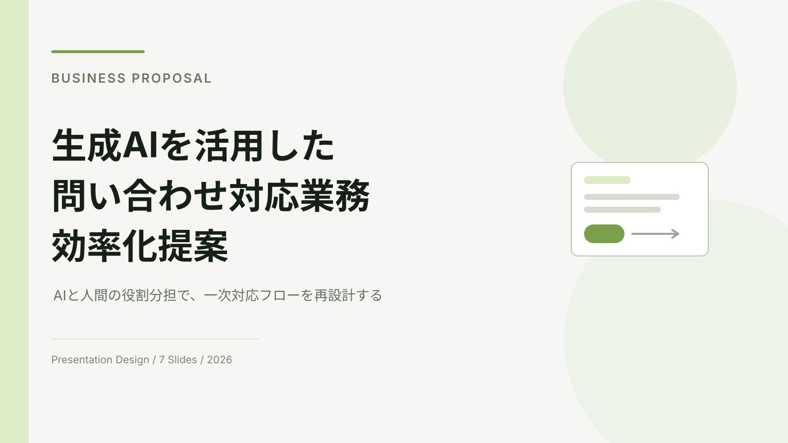

Presentation Design / 2026
生成AIを活用した問い合わせ対応業務の効率化提案
生成AIと人間の役割分担による問い合わせ業務改善をテーマに、調査・構成設計・情報整理・スライドデザインまで行った7枚の企業向け提案資料です。
Thinking Process
01 — 課題
AI導入の抽象論ではなく、問い合わせ業務のどこを変えるのかを具体的に示す必要があると考えました。
02 — 構成
現状 → 課題 → 自動化適性 → 提案フロー → 他社事例 → 導入ロードマップの順で、意思決定しやすい流れに整理しました。
03 — 情報設計
調査値・予測値・他社事例を混同しないようにラベルと注記を分け、数値の意味を明確にしました。
Deck Structure
1. 表紙 / 2. AI活用の現在地 / 3. 現状課題 / 4. 自動化適性分析 / 5. AIと人間の役割分担 / 6. 他社事例 / 7. 導入ロードマップ
Sources
IPA DX動向2026Salesforce State of ServiceLINEヤフーミスミグループ本社
本作品はポートフォリオ用の自主制作です。企業名・担当者名は架空であり、実在企業への提案実績ではありません。